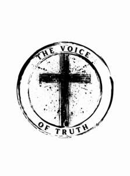

Trade Mark Journal No.2025/015 11 April 2025
UK00004177987 23 March 2025 (25,40)

- Class 25
- Shirts; Sweat shirts; Turtleneck shirts; Short-sleeve shirts; Polo shirts; Dress shirts; Short-sleeved shirts; Long-sleeved shirts; T-shirts; Knit shirts; Open-necked shirts; Pique shirts; Shirts for suits; Collared shirts; Sleep shirts; Football shirts; Corduroy shirts; Golf shirts; Soccer shirts; Maternity shirts; Camouflage shirts; Rugby shirts; Woven shirts; Short-sleeved T-shirts; Aloha shirts; Yoga shirts; Tee-shirts; Ramie shirts; Shirts and slips; Tennis shirts; Mock turtleneck shirts; Night shirts; Hooded sweat shirts; Sports shirts; Sport shirts; Button-front aloha shirts; Casual shirts; Fishing shirts; Under shirts; Hunting shirts; Button down shirts; Sports shirts with short sleeves; Moisture-wicking sports shirts; Shirt yokes; Yokes (Shirt -); Jerseys [clothing]; Undershirts; Printed t-shirts; American football shirts; Sleeveless jerseys; Polo sweaters; Sweatshirts; Bibs, sleeved, not of paper; Shorts [clothing]; Jackets (Stuff -) [clothing]; Stuff jackets [clothing]; Tank-tops; Undershirts for kimonos (juban); Wristbands [clothing]; Padded shirts for athletic use; Shirt fronts; Hoodies; V-neck sweaters; Babies' pants [clothing]; Sleeveless jackets; Denims [clothing]; Kerchiefs [clothing]; Collars [clothing]; Jackets [clothing]; Nappy pants [clothing]; Sleeved jackets; Jerseys; Blouses; Headbands [clothing]; Headbands for clothing; Trousers shorts; Dress pants; Clothing for wear in wrestling games; Sweat pants; Polo knit tops; Sweat shorts; Sweaters; Jeans; Sweat jackets; Aprons [clothing]; Clothes; Turtleneck sweaters; Leggings [trousers]; Stuff jackets; Denim pants; Sweatpants; Bibs, not of paper; Knit jackets; Quilted jackets [clothing]; Snap crotch shirts for infants and toddlers; Collars for dresses; Babies' pants [underwear]; Paper hats for use as clothing items; Denim jackets; Pants; Boy shorts [underwear]; Golf clothing, other than gloves; Tops [clothing]; Bandanas; Bib shorts; Belts (Money -) [clothing]; Money belts [clothing]; Hats (Paper -) [clothing]; Paper hats [clothing]; Nightshirts; Waistcoats [vests]; Mock turtleneck sweaters; Jackets being sports clothing; Braces [suspenders] for clothing / Suspenders [braces] for clothing; Playsuits [clothing]; Long sleeved vests; Undershirts for kimonos (koshimaki); Undershirts for kimonos [koshimaki]; Gabardines [clothing]; Bottoms [clothing]; Roll necks [clothing]; Capes (clothing); Embroidered clothing; Party hats [clothing].
- Class 40
- Monogramming of clothes; T-shirt printing; T-shirt embroidering services; Imprinting messages on tee-shirts; Tee-shirt embroidering services; Monogramming of clothing.
The Voice of Truth Ltd